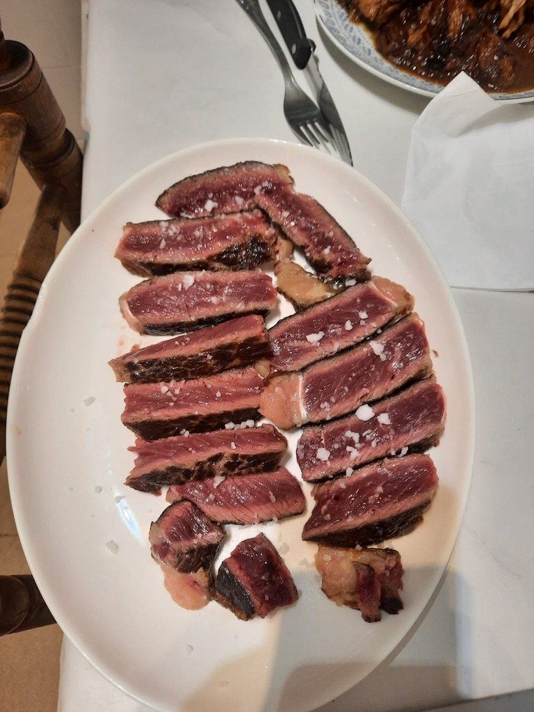

- Ponemos una plancha a fuego fuerte y dejamos que se caliente
- Cuando esté caliente, embadurnamos con una capa muy fina de aceite de oliva al chuletón
- Ponemos el chuletón en la plancha. Se dejará el chuletón por cada lado 1 minuto por centímetro de grosor que tenga.
- Cubrimos la parte superior de sal gorda
- Volteamos y sacudimos la sal
- Repetimos los pasos 3 y 4 para el otro lado
- Dejamos reposar el chuletón en una tabla para cortar unos 3 minutos
- Cortamos y servimos en el plato